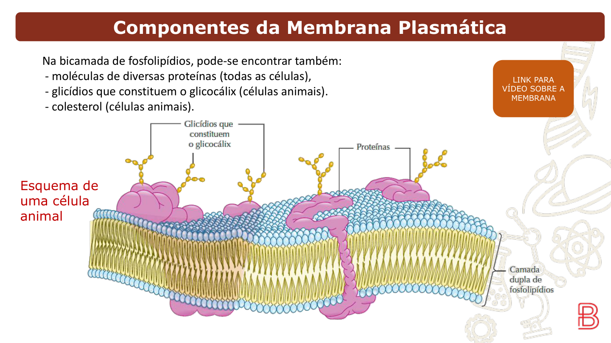
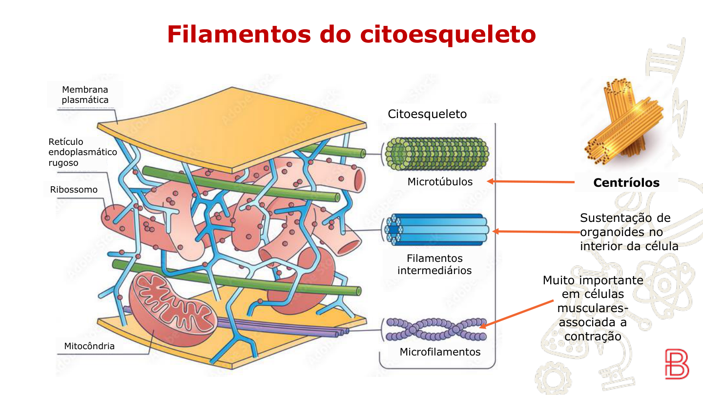
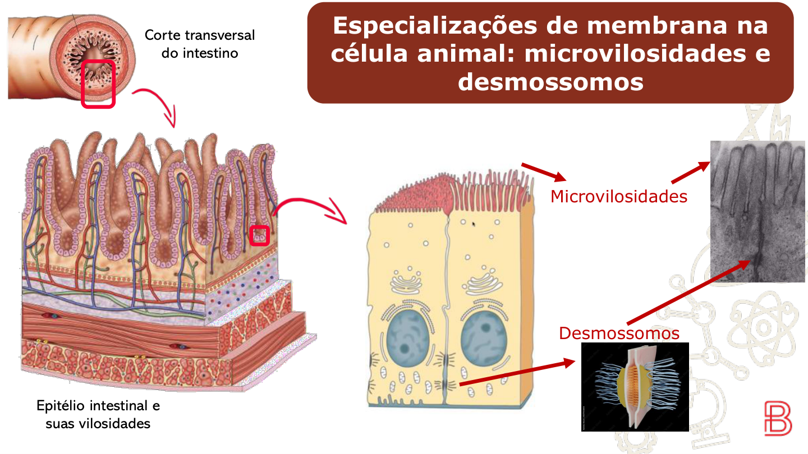
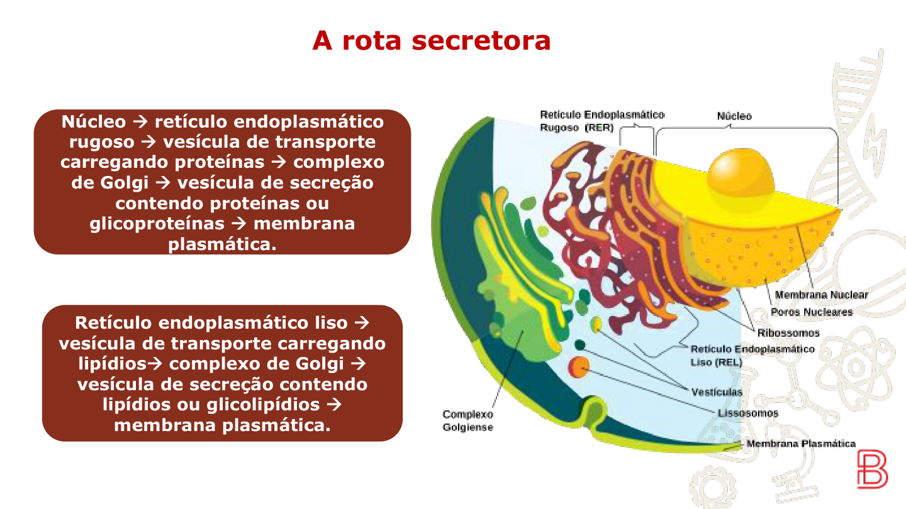

Aula 6 Membrana Plasmática
Função principal: permeabilidade seletiva — controla o que entra e sai da célula.
Também forma as membranas das organelas intracelulares (exceto ribossomos).
- Modelo: Mosaico Fluido (lipoproteico) — a membrana é fluida e os componentes se movem
- Bicamada fosfolipídica: duas camadas de fosfolipídios com as caudas voltadas para dentro
- Colesterol (só em células animais): reduz a fluidez da membrana, dando estabilidade

O fosfolipídio é o componente principal da membrana. Sua estrutura determina o comportamento da bicamada:
Cabeça — POLAR (hidrofílica)
- Glicídio + grupo fosfato
- Voltada para fora (meio aquoso)
- Interage com a água
Cauda — APOLAR (hidrofóbica)
- Ácidos graxos
- Voltada para dentro da membrana
- Repele a água — forma o interior impermeável
Proteína Receptora
- Reconhece e se liga a hormônios, neurotransmissores e outras moléculas sinalizadoras
- Alta especificidade — funciona como chave-fechadura
- Ao se ligar, altera o metabolismo da célula (ex: insulina → captação de glicose)
Proteína de Reconhecimento
- Permite que outras células reconheçam a célula (identidade celular)
- Conjunto dessas proteínas forma o glicocálix (só em célula animal)
Proteína Canal
- Forma poros na membrana para passagem de íons e moléculas específicas
Proteína de Adesão
- Une células entre si, formando tecidos
Proteína de Ancoragem
- Ancora o citoesqueleto à membrana, permitindo forma e movimento celular
- Células vegetais e algas: celulose
- Fungos: quitina
- Bactérias: peptideoglicanos
Confere estrutura, sustentação, proteção e forma. Não é organizada (é fibrosa) — por isso não é semipermeável como a membrana.
Aula 7 Citoesqueleto e Transporte
Formado por 3 tipos de complexos proteicos:
Microfilamentos
- Proteína: actina + outras
- Forma, organização e estrutura da célula
Filamentos Intermediários
- Proteínas de adesão
- Ligam a célula a outras células e estruturas

Microtúbulos
- Proteína: tubulina
- Participam da formação dos centríolos (só em célula animal → infertilidade)
- Originam: flagelos (movimento do espermatozoide), cílios (epitélio da traqueia), fusos de fuso (dividem o DNA na divisão celular)
- Participam do transporte de moléculas em vesículas (proteínas motoras deslizam sobre os microtúbulos)
A célula realiza trocas com o ambiente externo por meio de vesículas (bolsas formadas pela membrana). Esse transporte é sempre ativo (gasta ATP).
Endocitose — internalização
- Fagocitose (fagossomo): sólidos grandes, com pseudópodes (só com citoesqueleto). Ex: macrófago e neutrófilo
- Pinocitose (pinosoma): líquidos pequenos, por invaginação da membrana
Exocitose — externalização
- Clasmocitose: elimina resíduos de digestão celular (RESÍDUOS)
- Secreção: libera substâncias úteis para o organismo (HORMÔNIO, ENZIMA, ANTICORPO)
• Ativo (com gasto energético): íons, contra gradiente
• Passivo (sem gasto energético): difusão simples / difusão facilitada / osmose
Aula 8 Especializações de Membrana e Citoesqueleto
Encontradas principalmente no intestino delgado (epitélio de absorção).
- São projeções da membrana plasmática voltadas para o lúmen intestinal
- Aumentam drasticamente a superfície de contato sem aumentar o volume da célula
- Sustentadas por microfilamentos de actina (citoesqueleto)

Funcionam como "rebites" entre células adjacentes.
- Ligam células vizinhas mecanicamente
- Ancorados ao citoesqueleto de filamentos intermediários de ambas as células
- Comuns em tecidos sujeitos a stress mecânico: epitélio intestinal, pele, músculo cardíaco
Célula de Absorção
- Microvilosidades na superfície apical
- Especializada em absorver nutrientes
Célula Caliciforme
- Complexo de Golgi, mitocôndrias, vesículas de secreção, RER e núcleo bem desenvolvidos
- Especializada em secretar muco glicoproteico
Aula 9 Organelas da Rota Secretora

Função: síntese de proteínas que serão secretadas ou incorporadas à membrana.
- Os ribossomos do RER traduzem o RNAm (que saiu do núcleo) em proteína
- A proteína sintetizada é encaminhada em vesículas para o Complexo de Golgi
- Muito desenvolvido em células secretoras de proteínas (ex: células pancreáticas, células plasmáticas)
Função principal: síntese de lipídios (esteroides, fosfolipídios, hormônios sexuais).
- Muito desenvolvido em glândulas sebáceas e células que produzem hormônios esteroides
- Os lipídios sintetizados são encaminhados ao Complexo de Golgi para processamento e secreção
- Também atua na detoxificação de substâncias no fígado
- Adiciona açúcares às proteínas → glicoproteínas (ex: muco)
- Forma vesículas de secreção para exocitose
- Também origina: lisossomos, peroxissomos e acrossomos
- Contém a enzima catalase que converte: H₂O₂ → H₂O + O₂
- Presente em grande quantidade no fígado e rins (órgãos de detoxificação)
- Diferente do lisossomo: degrada compostos tóxicos, não faz digestão intracelular de partículas
- Localizado na cabeça do espermatozoide, sobre o núcleo
- Sem ele, a fecundação é impossível
- As enzimas são liberadas ao contato com o óvulo (reação acrossômica)
- Estrutura do espermatozoide: acrossomo → núcleo → mitocôndrias → flagelo
Banco de Questões
12 questões · Membrana, Citoesqueleto, Especializações e Rota Secretora
1. O modelo do Mosaico Fluido descreve a membrana como uma estrutura lipoproteica dinâmica. Qual das alternativas melhor explica por que a membrana é chamada de "fluida"?
2. Um paciente diabético injeta insulina. A insulina se liga a uma proteína específica da membrana das células-alvo, ativando a captação de glicose. Que tipo de proteína de membrana está sendo ativada e por que ela é altamente específica?
3. O colesterol está presente na membrana de células animais, mas não em células vegetais. Qual é a função do colesterol na membrana e por que sua ausência não compromete as células vegetais?
4. Homens com síndrome de Kartagener apresentam cílios imóveis por defeito nos microtúbulos. Além da imobilidade dos cílios (que causa infecções respiratórias), qual outra consequência esperada se explica por essa mesma falha?
5. Um macrófago encontra uma bactéria e a engloba por fagocitose. Qual estrutura celular torna isso possível, e por que esse processo não ocorre em células sem essa estrutura?
6. Uma célula pancreática produz enzimas digestivas e as libera para o intestino. Esse processo de liberação de substâncias úteis para o organismo é chamado de:
7. As células do intestino delgado possuem microvilosidades na superfície voltada para o lúmen. Qual é a vantagem funcional dessa especialização e qual estrutura do citoesqueleto a sustenta?
8. Pacientes com doença celíaca têm as microvilosidades intestinais destruídas pelo sistema imune. Qual seria a principal consequência metabólica esperada?
9. Uma célula das ilhotas pancreáticas produz insulina. Coloque em ordem a sequência correta da rota secretora para essa proteína:
10. Por que o RER é chamado de "rugoso" e qual é a relação entre essa característica e sua função?
11. Um glóbulo vermelho exposto ao H₂O₂ seria destruído. No entanto, células do fígado sobrevivem a altos níveis de H₂O₂ produzidos pelo metabolismo dos ácidos graxos. Qual organela é responsável por isso e como ela age?
12. Homens com ausência de acrossomo são estéreis mesmo com espermatozoides morfologicamente normais e com flagelo funcional. Por que o acrossomo é indispensável para a fecundação?